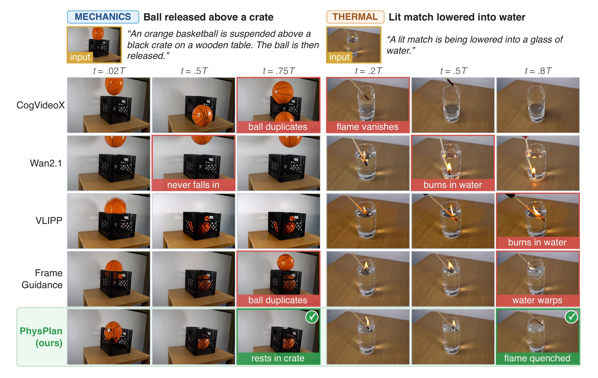

Abstract
Contributions
Method
A phenomenon specified in words unfolds as sparse, local changes to the physical state of the observed scene: a few objects and relations change at a time, while the rest persists. PhysPlan therefore represents the phenomenon as changes to a state graph grounded in the observed frame, and lets the same graph decide what the guidance constrains.
Two gaps in prompt-derived planning
Overview

The two modules communicate only through an event chain ei = (Gi−1 →εi Gi, fi). Each event specifies:
① Grounded Physical State Reasoning
Since VLMs are unreliable at quantitative physical reasoning, the edits are qualitative and verified by deterministic checks, and the VLM never regenerates a full state, so objects that should not change stay unchanged. Select a step:

Worked example: the event chain for “an ice cube melting in the sun”
Deterministic checks
② Graph-Guided Test-Time Optimization
A keyframe contains more than the graph specifies, such as the exact contour of a puddle, and matching it pixel by pixel would impose these details on the video. PhysPlan compares the video with each keyframe only on the properties selected by the edits, and updates it only in the regions of the edited objects.
Each edit type selects what is measured
Click an operator to see the guidance term it selects. All terms compare object-level summaries rather than pixels, so they ignore the exact contour drawn by the editor; a count term for every object keeps the VDM from losing or duplicating unchanged objects.
Implementation
Qualitative comparisons
Same prompt and conditioning frame for every method, on one shared timeline. Pick a scenario:

Results
Physical plausibility
PhyGenBench average (PCA score)
Physics-IQ average
On PhyGenBench, the largest gains are in Material (+0.34), Mechanics (+0.33), and Thermal (+0.31), which are dominated by changes of object state that the graph expresses directly as edits. Frame Guidance, which matches the same keyframes as whole frames, does not improve over its base model (0.51 vs. 0.52), whereas PhysPlan gains +0.26 from them. On Physics-IQ, the largest gains are in Solid Mechanics (+15.2), Optics (+13.7), and Magnetism (+6.4), where the outcome depends on which objects move or change while the rest of these cluttered real scenes stays fixed; PhysPlan improves in every domain.
Visual quality
Guidance could trade visual quality for plausibility. PhysPlan improves FID over its base model and Frame Guidance and reduces FVD by about 21% and 29%, which we attribute to the region-weighted update keeping the background stable.
On per-video VBench scores, PhysPlan raises the Quality Score from 83.05 to 84.88 and improves six of seven dimensions, most in Dynamic Degree (+6.11); it also exceeds closed-source VDMs in Quality Score and Dynamic Degree.
Radar: each axis is min–max normalized across all six methods in the table below.